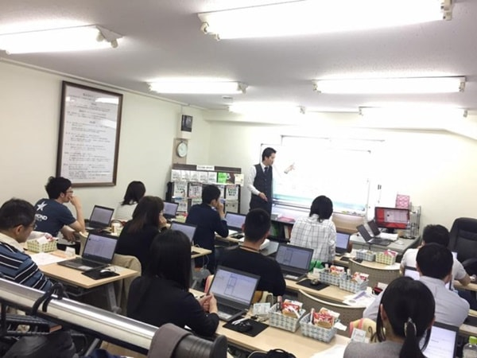

マクロVBA講座：Excelを自動化

エクセルVBAを1日で学べるエクセルVBA講座です。
エクセルVBAの実践法を一日で学び、面倒だったExcel作業を1クリック1秒で終えるテクニックを身につけることが誰でも可能なのです。
・面倒な作業、手間のかかる作業、複雑な作業を自動化したい
・単純なルーティンワークを自動化させたい
そんな方にお勧めしたい、
「株式会社すごい改善」とは
Excel専門の業務改善コンサルティング、研修を行う会社です。
取引先は経済産業省など中央省庁、一部上場企業から中小企業、個人事業主まで幅広く活躍している会社です。
エクセル講座：ExcelマクロVBAセミナー初級編
もちろん学ぶことは決して無駄ではありませんが、それでは多大な時間がかかってしまいます。
あくまでも、仕事の現場でいかに役に立つかに焦点を絞って学ぶことで、より早くVBAを習得できるようになります。
10時間かかってた仕事を1分に短縮するテクニックがたった1日で身に付きます
・マクロって難しいのではと思っている方
・マクロ関連の書籍を大量に読んで諦めてしまった方
・他のセミナーに参加したが、結局覚えられなかった方
・マクロの自動記録を使っていたが、限界を感じている方
・見よう見まねでマクロを書いていたが、基礎から覚えたい方
・仕事の現場で使われているマクロとはどんなものか知りたい方
普段は、各企業様のコンサルタントおよびマクロ(VBA)開発に携わっています。
その経験から、無駄を省き、実務に直結する講座内容となっています。
・セルに値や式を入れるには
・セルの書式設定をするには
・シートを追加したり削除したりするには
・複数のシートを扱うには
・別のブックを開くには
・フォルダ内の全ファイルを操作するには
これらの用語の説明もあります。
しかし、難しい事ではありません。
そもそも、この言葉を覚える事が目的ではないのですから。
何の何をどうするのか・・・それだけのことです。
日本語で読み下す方法を理解し、実際に書く事で理解が進みます。
Dim i As Long
For i = 2 To Cells(Rows.Count, 1).Row
If Cells(i, 3) ・・・
・・・
End If
Next
マクロVBAが読めるようになる事、マクロが書けるようになる事。
普段の仕事の中で、エクセルとマクロ(VBA)で会話ができるようになる事。
何より、仕事の実務で使う事ができるようになる事。
その為の、1日速習のExcelマクロ実践講座です。
VBAが単なる文字列ではなく、意味のある文章として読めるようになります。
記号の羅列、呪文に見えた、マクロVBAコードの意味が理解できるようになります。
そして、翌日から仕事の実務で活用する事ができるようになります。
後は実践でマクロを書きつつ覚えていけるようになります。
そして、それを無期限サポートでバックアップしてもらえ講座が、
それができるようになる、銀座の教室で開催されているエクセルVBA講座です。
VBA講座：開催日程およびお申込み
講座には回数無制限の無期限サポートが付いています
無期限、回数無制限のメールサポートが付いています。
その為には、教室でのエクセル講座の時間だけでは少し足りないのです。
講座受講後に、実際のお仕事で使っていきながらスキルアップしていく必要があります。
質問内容は、講座での内容に限定していません、仕事でお使いのファイルでも構いません。
実務経験豊富な講師陣で回答していますので、どんな内容でも適切な回答が返ってきます。
エクセル講座の必要性
エクセル講座でExcelマスターへの道
エクセルって何？…いつ覚えるの？
エクセルを仕事で使いこなす極意
Excel資格を取っても仕事でエクセルが使いこなせない理由
エクセル残業を削減！エクセルで業務改善！
同じテーマ「エクセル教室のエクセル講座」の記事
エクセル&VBA オンライン講座
新着記事NEW ・・・新着記事一覧を見る
VBA100本ノック 100本目：WEBから100本ノックのリストを取得｜VBA練習問題（3月3日）
VBA100本ノック 99本目：自動席替え（行列と前後左右が全て違うように）｜VBA練習問題（3月2日）
VBA100本ノック 98本目：席替えルールが守られているか確認｜VBA練習問題（3月1日）
VBA100本ノック 97本目：Accessデータを取得（グループ集計）｜VBA練習問題（2月27日）
VBA100本ノック 96本目：Accessデータを取得（マスタ結合&抽出）｜VBA練習問題（2月26日）
VBA100本ノック 95本目：図形のテキストを検索するフォーム作成｜VBA練習問題（2月24日）
VBA100本ノック 94本目：表範囲からHTMLのtableタグを作成｜VBA練習問題（2月23日）
VBA100本ノック 93本目：複数ブックを連結して再分割｜VBA練習問題（2月22日）
VBA100本ノック 92本目：セルの色を16進で返す関数｜VBA練習問題（2月20日）
VBA100本ノック 91本目：時間計算（残業時間の月間合計）｜VBA練習問題（2月19日）
アクセスランキング ・・・ ランキング一覧を見る
1.最終行の取得（End,Rows.Count）｜VBA入門
2.RangeとCellsの使い方｜VBA入門
3.変数宣言のDimとデータ型｜VBA入門
4.マクロって何？VBAって何？｜VBA入門
5.Range以外の指定方法（Cells,Rows,Columns）｜VBA入門
6.セルのコピー&値の貼り付け（PasteSpecial）｜VBA入門
7.繰り返し処理（For Next)｜VBA入門
8.セルに文字を入れるとは（Range,Value）｜VBA入門
9.マクロはどこに書くの（VBEの起動）｜VBA入門
10.とにかく書いてみよう（Sub,End Sub）｜VBA入門
- ホーム
- エクセル教室のエクセル講座
- マクロVBA講座：Excelを自動化
このサイトがお役に立ちましたら「シェア」「Bookmark」をお願いいたします。
記述には細心の注意をしたつもりですが、
間違いやご指摘がありましたら、「お問い合わせ」からお知らせいただけると幸いです。
掲載のVBAコードは動作を保証するものではなく、あくまでVBA学習のサンプルとして掲載しています。
掲載のVBAコードは自己責任でご使用ください。万一データ破損等の損害が発生しても責任は負いません。